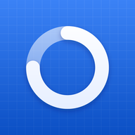

Free · No account · No ads
The simple, private workout tracker for iPhone.
Log your sets in a few taps, follow ready-made routines or build your own, and see your strength go up. Your workouts never leave your phone.

Free · iPhone · Requires iOS 26 or later · English & Russian
- No account
- No ads
- No subscription
- Works offline
- Data stays on your iPhone
Everything you need in the gym. Nothing you don’t.
Liftyx does one job: helping you remember what you lifted, so you can lift a bit more next time.
- Ready-made routines Start with full-body and Push / Pull / Legs routines, or build your own and start a workout in one tap.
- Fast set logging Weight and reps pre-filled from your plan. Tick a set and move on. Warm-up and failure sets are marked.
- Rest timer Starts when you finish a set and alerts you when it’s time for the next one, even with the phone in your pocket.
- Personal records New bests are marked as you log them, and in History and Statistics.
- History & calendar Every session is saved. See what you did last time, or repeat a past workout.
- Statistics Charts of volume, weight and reps for every exercise over time.
- Your workout, your order Reorder exercises mid-workout, add or remove sets, and keep notes on routines.
- Backup & CSV export Export a backup file and restore it on any iPhone, or open your history in a spreadsheet.
- kg or lbs, English or Russian Switch units any time. The app follows your iPhone’s language.
New in 1.5
Your rest timer on the Lock Screen.
See the countdown without unlocking your phone, on the Lock Screen and in the Dynamic Island. Skip the rest with one tap, and see how many sets are done.
How it works
- 1 Pick a workout Start from a routine, repeat a past session, or begin an empty workout.
- 2 Log your sets Check off each set. The rest timer keeps you moving between them.
- 3 Watch the progress Every session lands in History, with records and charts in Statistics.
Your data stays on your device
Liftyx keeps your workouts, routines, and statistics on your iPhone. There is no Liftyx account and no cloud sync. Optional anonymous usage and crash reports help improve the app and can be turned off at any time in Settings → Privacy → Share usage data.
Read the full privacy policy for details.
Questions
Is Liftyx free?
Yes. Liftyx is free, with no subscription, no in-app purchases and no ads.
Do I need an account?
No. Open the app and start logging. There is no sign-up and no Liftyx account.
Where is my data stored?
On your iPhone. Liftyx has no cloud sync. You can export a backup file at any time and import it on another iPhone, or export your history as CSV for a spreadsheet.
Does it work without internet?
Yes. Everything works offline, so a gym with no signal is not a problem.
Which languages are supported?
English and Russian. The app follows your iPhone’s language.
Something isn’t working. How do I get help?
Visit the support page or write to support@liftyx.app.

Start your next workout with Liftyx.

Free · iPhone · Requires iOS 26 or later